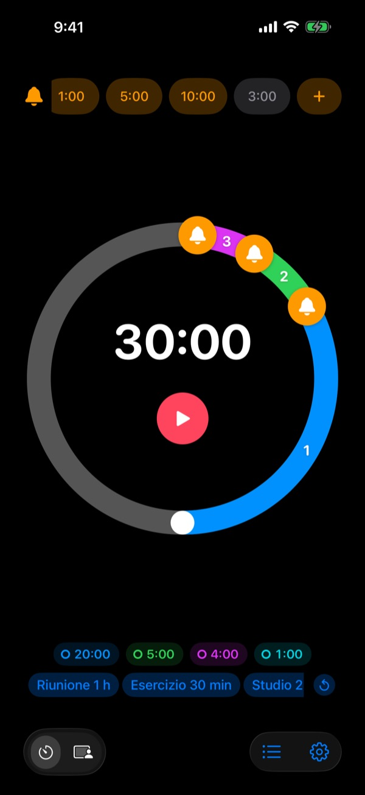
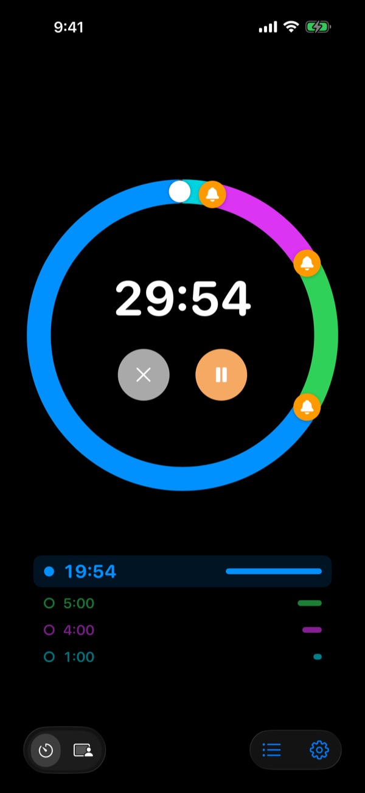
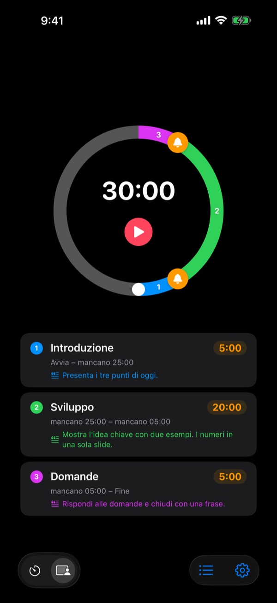
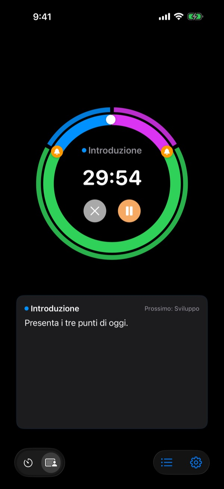

Non quando è finita,
ma prima
5 minuti prima della fine del discorso, 3 prima di chiudere la riunione. Rereminder ti avvisa in ogni momento che scegli, così non devi continuare a guardare l’orologio.
Preavvisi gratis e senza limiti. Per iPhone, Apple Watch e Mac.

Provalo qui
Scegli una durata e i preavvisi, poi premi il pulsante rosso. Un minuto passa in un secondo e ogni preavviso suona al momento giusto.
Ti è mai suonato il timer quando era già tardi?
Un timer normale suona solo a zero. Il discorso finisce prima della conclusione, la lezione si chiude senza riepilogo e la riunione sfora nella successiva senza decidere nulla. Non ti serve un segnale che dica che è finita, ma uno quando c’è ancora tempo per chiudere bene.
Avvisi prima della fine, quanti ne vuoi
Trascina le campanelle del quadrante a 10, 5 o 1 minuto dalla fine, o dove preferisci. Nessun limite, e ogni preavviso può avere il suo messaggio, come «Chiudi le slide».
A schermo spento il tempo rimasto resta visibile nella schermata di blocco e nella Dynamic Island, e Apple Watch ti dà un colpetto al polso.

Dividi il discorso in parti
Introduzione 5 minuti, corpo 20, domande 5. Dai a ogni parte un nome e una traccia. A ogni cambio ricevi un avviso con il suo nome, e i tempi si rispettano quasi da soli. (Pro)

Quello che devi dire, sullo schermo
Durante l’esposizione vedi in grande la traccia della parte in corso e quella successiva. Se superi lo zero continua a contare, così sai di quanto hai sforato. (Pro)

Si parte in tre passi
- 1
Imposta il tempo
Ruota il quadrante o tocca il tempo e scrivilo. Un giro sono 60 minuti, due giri 120.
- 2
Metti i preavvisi
Tocca un’etichetta come 1:00 o 5:00 in alto, o trascina una campanella sul quadrante.
- 3
Avvia e non pensarci
Blocca l’iPhone. iPhone e Apple Watch ti avvisano in ogni momento che hai fissato.
Le impostazioni più usate
- Discorso di 20 minuti
- 5 min prima «Passa alle conclusioni», 1 min prima «Ringrazia»
- Lezione di 50 minuti
- 10 min prima «Spiega i compiti», 3 min prima «Riepiloga»
- Riunione di 30 minuti
- 5 min prima «Conferma le decisioni»
- Lezione di pilates o yoga
- Modalità Sessione, una parte per sequenza (Pro)
- Studio di 25 minuti
- 5 min prima, poi pausa
- Recupero di 3 minuti tra le serie
- 30 s prima «Preparati alla serie successiva»
- Mentoring di un’ora
- 15 e 5 min prima
Salva come modello quello che ripeti e riaprilo con un tocco (da Memoria in su). Puoi anche avviare o fermare un timer con Comandi Rapidi e Siri.
I preavvisi sono gratis. Paghi solo se vuoi che si ricordi.
Gratis
- Preavvisi senza limiti
- Il tuo messaggio per ogni preavviso
- Attività in tempo reale nella schermata di blocco e nella Dynamic Island
- Continua ad avvisare finché non rispondi e termina con una sveglia
- App per Apple Watch e barra dei menu del Mac
- Tutti i colori del tema
Memoria · Pro
- Memoria: salva le impostazioni come modelli e avviale con un tocco
- Memoria: riaprendo l’app ritrovi l’ultima impostazione
- Pro: tutto Memoria più la Modalità Sessione con nomi delle parti e tracce
- Pro: tempo extra, cronologia e statistiche
Per ogni piano scegli l’abbonamento annuale o un acquisto unico a vita. Puoi provare la Modalità Sessione, il tempo extra e la cronologia qualche volta prima di pagare.
Niente pubblicità. Un Pass per sempre apre anche tutte le app di Leeo.
Domande frequenti
Un preavviso non è suonato.
Quasi sempre dipende dai permessi o da una modalità Full immersion. Controlla il permesso per le notifiche nell’app, in Impostazioni › Modalità di avviso. Se usi una modalità Full immersion, aggiungi Rereminder tra le app consentite in Impostazioni › Full immersion di iOS. In modalità silenziosa senti solo la vibrazione. Se Rereminder è in Impostazioni › Notifiche › Riepilogo programmato, i suoi avvisi vengono trattenuti: toglila da lì.
Mi accorgo della fine anche in modalità silenziosa?
Sì. Attiva «Termina con una sveglia» e suona forte anche in modalità silenziosa o Full immersion. Con «Continua ad avvisare finché non rispondo» insiste finché non tocchi Stop o Posponi nella notifica.
Il mio Apple Watch non si sincronizza.
Apri Impostazioni › I miei dispositivi nell’app: vedrai quale passaggio manca. L’orologio deve essere abbinato a questo iPhone, Rereminder deve essere installata sull’orologio e devi aprirla una volta sull’orologio dopo l’installazione. Da lì in poi il timer arriva anche con l’app dell’orologio chiusa.
Il mio Mac risulta non connesso.
«Connesso» significa che l’app era aperta su quel Mac negli ultimi 10 minuti, quindi un Mac appena riattivato compare dopo qualche minuto. Entrambi i dispositivi devono usare lo stesso account iCloud con iCloud Drive attivo. L’app per Mac richiede macOS 26 o successivo.
Ho pagato ma non si è sbloccato niente.
Tocca «Ripristina acquisti» nella schermata dei piani, con lo stesso Account Apple usato per pagare. Gli acquisti a vita tornano anche se elimini l’app o cambi dispositivo.
I miei modelli salvati sono bloccati.
Sono ancora lì. Senza Memoria o Pro restano visibili ma bloccati, e si riaprono appena acquisti uno dei due.
Come ottengo un rimborso?
I rimborsi li gestisce Apple. Richiedilo su reportaproblem.apple.com con l’Account Apple usato per pagare. Se qualcosa non funzionava, dimmelo anche a me, così la prossima persona non ci incappa.
Posso provarla senza installarla?
Apri m1zz.github.io/rereminder sull’iPhone e il timer parte subito come App Clip. Quadrante e preavvisi ci sono. Modelli, Modalità Sessione e app per l’orologio sono nell’app completa.
Su quali dispositivi funziona?
iPhone con iOS 26 o successivo, Apple Watch con watchOS 11.6 o successivo e Mac con macOS 26 o successivo. L’iPad non è ancora supportato. L’app è disponibile in 24 lingue.
Dove restano i miei dati?
Timer, modelli, nomi delle parti, tracce e cronologia restano sul tuo dispositivo e spariscono se elimini l’app. L’app invia solo statistiche d’uso anonime che aiutano a migliorarla. L’informativa sulla privacy dice esattamente quali.
Domande o suggerimenti? Scrivi a leeo@kakao.com. Di solito rispondo entro 2 o 3 giorni.